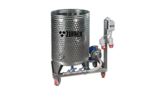
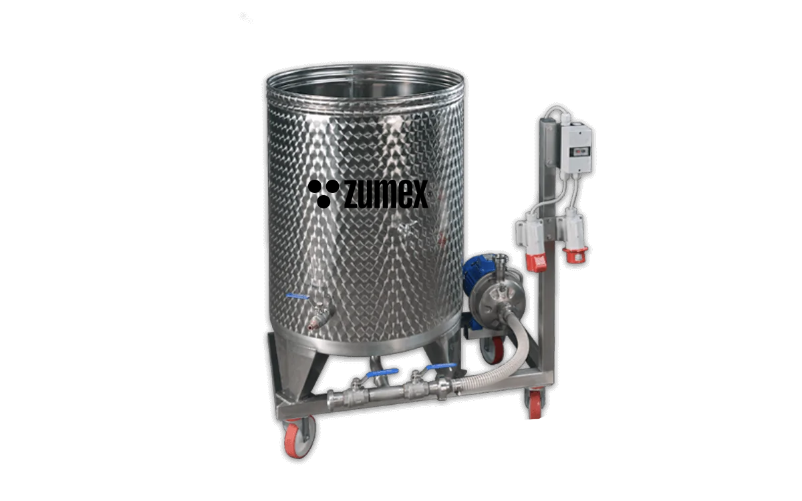

Průmyslové
ZCIP / ZS CIP
Hygiena jako součást procesu.
Mobilní čisticí systémy pro průmyslové výrobní zařízení. Recirkulace čisticího média podporuje řízenou sanitaci výrobní linky.
Poptat tento produktCenu a dostupnost vám potvrdíme podle konfigurace.
250 lNádrž
10 000 l/hRecirkulace
3 barTlak
Navržen pro váš provoz.
ZS CIP je mobilní čisticí systém pro sanitaci kompatibilních zařízení bez jejich úplného rozebrání. Je určen jako součást průmyslové linky, kde je potřeba opakovatelný čisticí postup a cirkulace čisticího média.
Nerezová jednotka na kolech se snadno přesouvá mezi vhodnými zařízeními. Nádrž o objemu 250 litrů a recirkulační okruh tvoří základ čištění na místě; postup se nastavuje podle konkrétní technologie a používaných přípravků.
Čištění vnitřních okruhů technologie.
Začlenění do hygienického režimu provozu.


VYBERTE SI PROVEDENÍ
Jedna řada. Vaše konfigurace.
ZCIP
Kompatibilitu okruhu, čisticí přípravky a pracovní postup ověřte s dodavatelem linky. CIP nenahrazuje kontrolu hygieny ani údržbu předepsanou pro jednotlivá zařízení.
Poptat variantuZS CIP
Kompatibilitu okruhu, čisticí přípravky a pracovní postup ověřte s dodavatelem linky. CIP nenahrazuje kontrolu hygieny ani údržbu předepsanou pro jednotlivá zařízení.
Poptat variantuFotografie jsou ilustrační pro danou řadu. Výbava a technické parametry se mohou lišit podle varianty.
PODROBNĚ A PŘEHLEDNĚ
Technické parametry.
- Objem nádrže
- 250 l
- Recirkulační průtok
- 10 000 l/h
- Tlak
- 3 bar
- Příkon
- 1,1 kW
- Rozměry dle výrobce
- 1 430 × 1 200 × 1 200 mm
- Hmotnost
- 70 kg
- Napájení
- 200–480 V, 50–60 Hz
- Konstrukce
- Mobilní, nerezová
Údaje výrobce pro uvedené provedení. Výkon závisí na surovině a konfiguraci. Zdroj: Zumex ↗
Co zvážit při výběru
Kompatibilitu okruhu, čisticí přípravky a pracovní postup ověřte s dodavatelem linky. CIP nenahrazuje kontrolu hygieny ani údržbu předepsanou pro jednotlivá zařízení.
Probrat vhodnou konfiguraci ↗VŠE PODSTATNÉ PO RUCE
Technické podklady.
Podrobnosti, dostupné příslušenství a materiály výrobce.